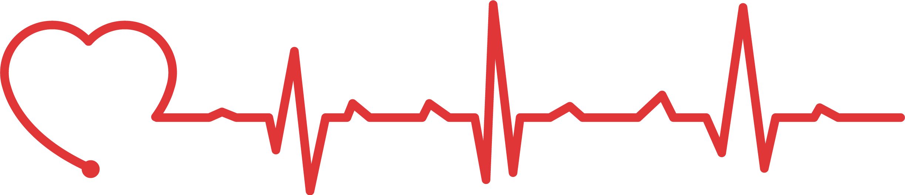
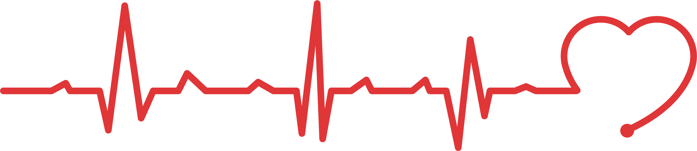

OneHeart

Civil Rights 2020
The rise of a new generation protesting against racial injustice is driving a new era of change in America, like the generation that emerged 60 years ago to build the civil rights movement of that time. What we learned 60 years ago is that when people move, change is possible, now this generation has an opportunity to make America better, and the lives and options of millions are at stake in their struggle. These hand-picked charities will help the cause from specifically different angles.
Equal Justice/Incarceration
The following charities and foundations are committed to ending mass incarceration and excessive punishment in the United States, to challenging racial and economic injustice, and to protecting basic human rights for the most vulnerable people in American society.
- Equal Justice Initiative
- Equal Justice initiative is an efficient and trsutworthy charity, spending almost 93% of it's funds on social justice in the justice system.
They spend less than a dollar to raise $100!
- Centurion
- Centurion is a foundation that helps those wrongfully imprisoned get released AND helps them get back on their feet.
Spent $1.8 million on 1,100 cases last year.
Spend almost 85% of it's funds on the cases
Youth
These foundations' main goals is the youth of the minority communities. They train them for their later life and teach them skills they'll use later in life meanwhile they are kept off the streets in a safe environment.
- My Brother's Keeper
- My Sister's Keeper
- These sister and brother foundations are a part of almost every school in New York and everywhere across the country.
These two foundations spend more than 92% of their funds on the programs it runs and the kids they serve.
The foundations' popularity makes it extremely efficient, needing less than $2 to raise $100